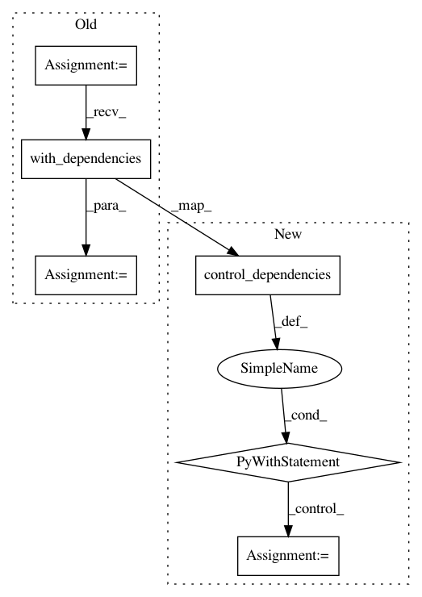

443c074527f164955720dcde5c1830faf519f89f,inception/inception/slim/ops_test.py,BatchNormTest,testComputeMovingVars,#BatchNormTest#,593
Before Change
update_ops = tf.get_collection(ops.UPDATE_OPS_COLLECTION)
with tf.control_dependencies(update_ops):
barrier = tf.no_op(name="gradient_barrier")
output = control_flow_ops.with_dependencies([barrier], output)
// Initialize all variables
sess.run(tf.global_variables_initializer())
moving_mean = variables.get_variables("BatchNorm/moving_mean")[0]
moving_variance = variables.get_variables("BatchNorm/moving_variance")[0]
After Change
update_ops = tf.get_collection(ops.UPDATE_OPS_COLLECTION)
with tf.control_dependencies(update_ops):
barrier = tf.no_op(name="gradient_barrier")
with tf.control_dependencies([barrier]):
output = output
// Initialize all variables
sess.run(tf.global_variables_initializer())
moving_mean = variables.get_variables("BatchNorm/moving_mean")[0]
moving_variance = variables.get_variables("BatchNorm/moving_variance")[0]
mean, variance = sess.run([moving_mean, moving_variance])
In pattern: SUPERPATTERN
Frequency: 4
Non-data size: 6
Instances
Project Name: tensorflow/models
Commit Name: 443c074527f164955720dcde5c1830faf519f89f
Time: 2017-05-18
Author: neal@nealwu.com
File Name: inception/inception/slim/ops_test.py
Class Name: BatchNormTest
Method Name: testComputeMovingVars
Project Name: tensorflow/models
Commit Name: 443c074527f164955720dcde5c1830faf519f89f
Time: 2017-05-18
Author: neal@nealwu.com
File Name: inception/inception/slim/ops_test.py
Class Name: BatchNormTest
Method Name: testEvalMovingVars
Project Name: tensorflow/models
Commit Name: 443c074527f164955720dcde5c1830faf519f89f
Time: 2017-05-18
Author: neal@nealwu.com
File Name: slim/preprocessing/vgg_preprocessing.py
Class Name:
Method Name: _random_crop
Project Name: tensorflow/models
Commit Name: 443c074527f164955720dcde5c1830faf519f89f
Time: 2017-05-18
Author: neal@nealwu.com
File Name: inception/inception/slim/ops_test.py
Class Name: BatchNormTest
Method Name: testReuseVars